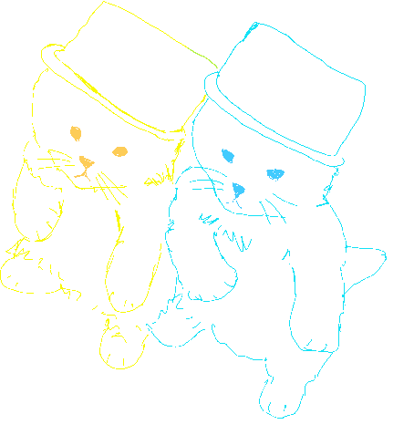
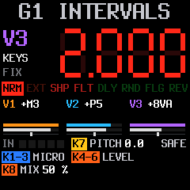
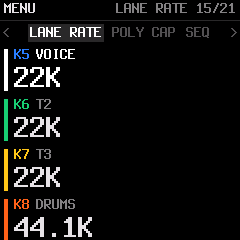

Enhanced SLOOP for the M-Vave SMK-37
Enhanced versions of the SLOOP groovebox firmware on the SMK-37, in three flavours. Install and edit from this page: Chrome or Edge, over USB.
Multichannel USB audio
SLOOP 2.8.1 as a 6-channel USB audio interface: your DAW records each track and drum group on a channel of its own. Punch-in effects on every channel, the punch-in page on the pads, sequencer effects and DAW mode. Every engine and the built-in samples.


The channels: HOME > USB > USB LAYOUT
- STEREO (default): the stereo mix, as on the FM-1: 44.1 or 48 kHz (HOME > AUDIO > USB RATE)
- SYNTHS+RET: T1, T2, T3, the drums, the effects return L and R
- DRUMS+RET: kick, snare, hats, percussion, the effects return L and R
- ALL DRY: T1, T2, T3, kick, snare, hats and percussion
The three 6-channel layouts: 24 bit, 48 kHz (default, resampled on the keyboard) or 44.1 kHz (the lightest), HOME > USB > STEM RATE.
Install: pick your model
Edit
Read
- The SMK-37 manual: every control, the stems, the stem punch-in page
- The release: the packages and their SHA-256
Mewcoder
SLOOP 2.8.4 with a 20-channel vocoder modelled on the Sennheiser VSM201, played from the keys and the sequencer, and two USB audio inputs, each routed on the keyboard. Your voice, or any sound you choose, dry or vocoded.


Each input: HOME > SETUP > IN L, IN R
- TRACK 3: your voice into the vocoder, dry or vocoded
- CARRIER: your own synth as the vocoder's carrier, gated by track 3's notes
- T1 or T2: an instrument through that track's effects and slicer, on a channel of its own
- OFF: a mono mic on the other side, at full level
SETUP picks which of SLOOP's tracks play beside the vocoder (FULL, VOC + DRUMS, VOC + SYNTH, VOC ALONE). With any turned off, the vocoder runs at 44.1 kHz.
Install
Edit
Read
- Mewcoder's page: what it adds, what it leaves out, the manuals
- The vocoder manual (shared with Mewcoder + Harmoniser)
- The release: the package and its SHA-256
Mewcoder + Harmoniser pre-release
Mewcoder now with its own harmoniser: your voice, or any sound you choose, into up to three harmony voices modelled on the Eventide H949, with a lane of it across every track, each harmonised on its own channel. Mewcoder's vocoder is all there.


Play it
- HOME > HARMONY: ON: track 1 is the harmoniser; T1's keys, the interval pads and the sequencer play the intervals
- FADER BANK E: PITCH, FEEDBACK, VOICE IN, LANE RATE
- FADER BANK F: each track's MIX, from dry to harmony alone
- The HARMONY page: the PITCH RATIO readout, the HK940's interval pads, the feedback EQ, REPEAT
The load settings (LANE THIN, LANE RATE, LANE MONO, POLY CAP) keep a full scene in time. Early testing: the known limits are in the manual.
Install
Edit
Read
- Mewcoder + Harmoniser's page: what it adds, what it leaves out
- The harmoniser manual and the vocoder manual
- The release: the package and its SHA-256
Each installer checks that the package matches your keyboard before it writes anything, and never erases your projects, presets, samples or settings. Use the editor that goes with the build you installed. To go back to the stock firmware, use M-Vave's own updater (M-UPGRADE).
More
- The source (GPL-3.0), built on SLOOP by isod89, Felucca by Leo Kuroshita and the SMK-37 layer by genkigenki